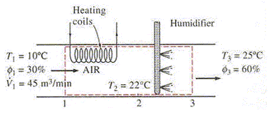

HEATING WITH HUMIDIFICATION (I)

An air conditioning system is to take in outdoor air at T1C and %RH1 relative humidity at a steady rate of V1 (m3/min) and to condition it to T3C %RH3 relative humidity. The outdoor air is first heated to T2C in the heating section and then humidified by the injection of hot steam in the humidifying section. Assuming the entire process takes place at a pressure of P(kPa), determine,
a) the rate of heat supply in the heating section (kJ/min)
b) the mass flow rate of the steam required in the humidifying section.